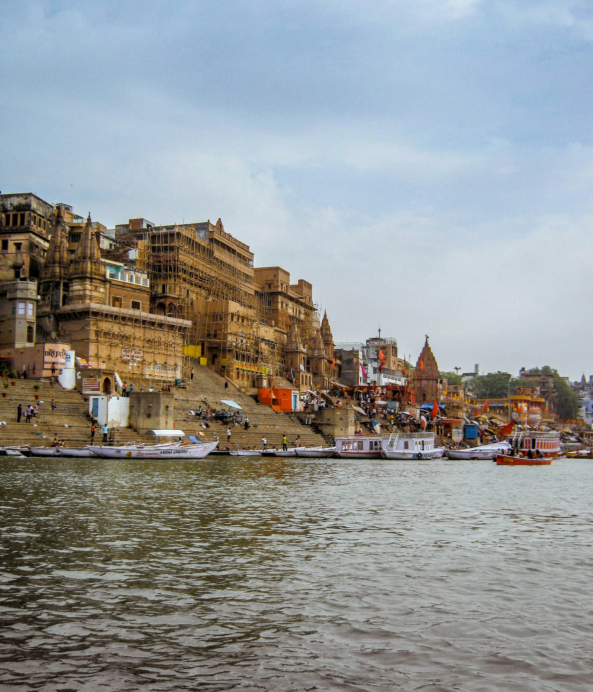
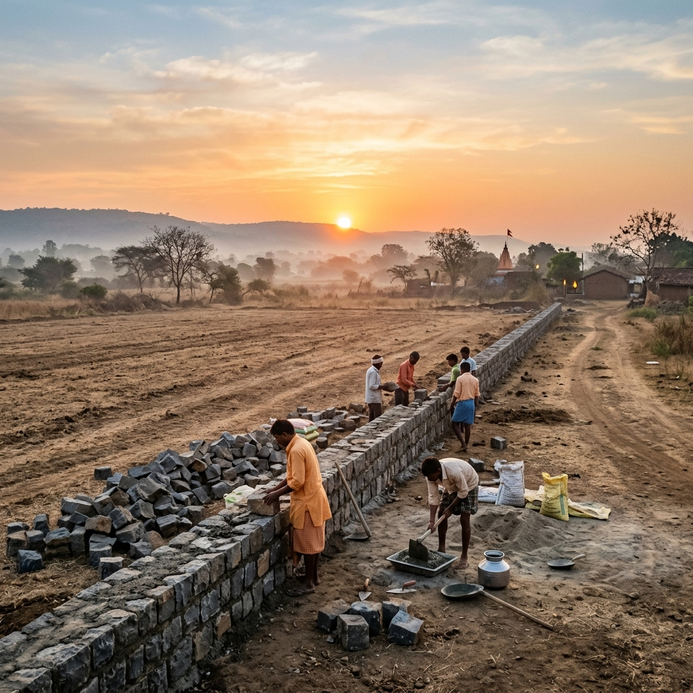
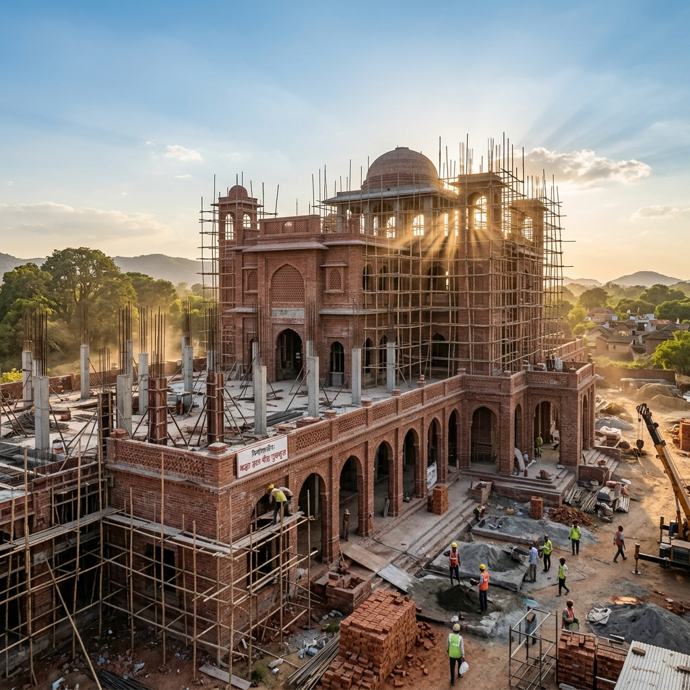
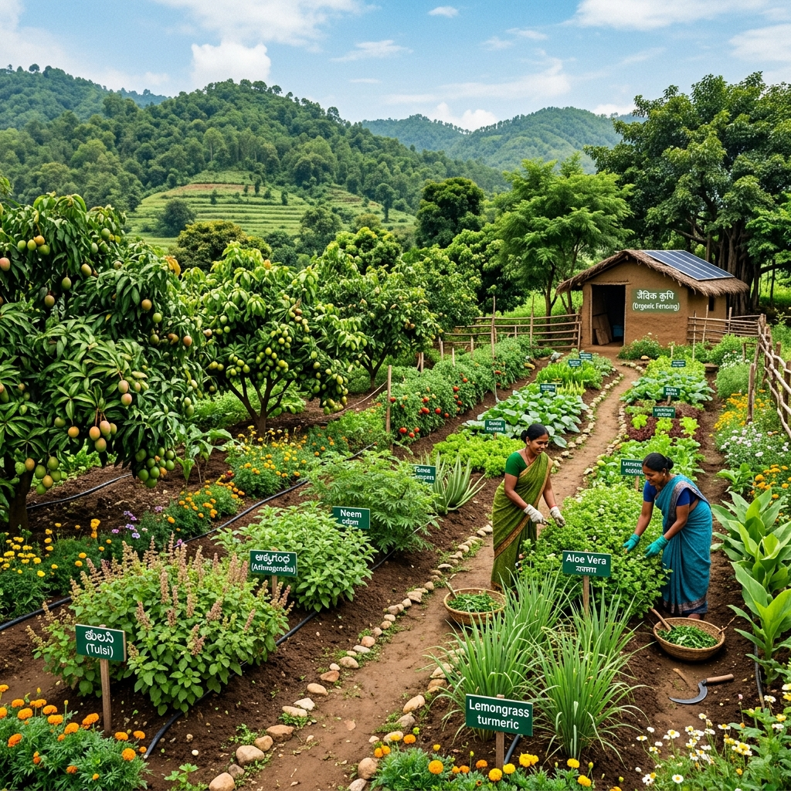
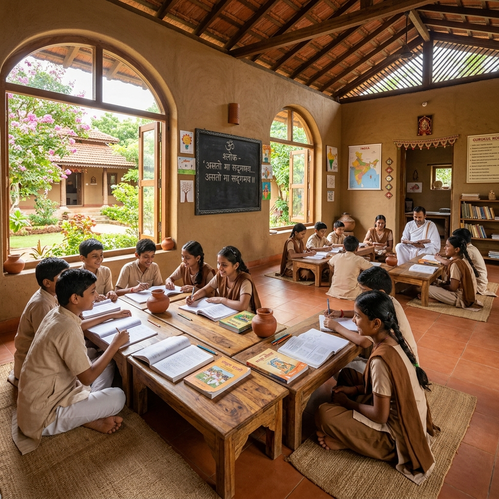
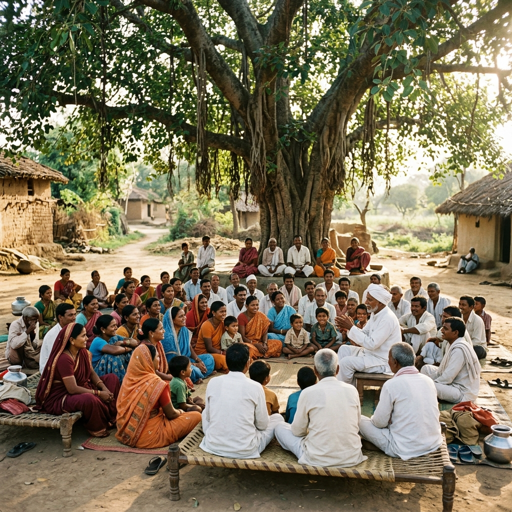

A residential Gurukul where the Bhāratīya knowledge tradition, rigorous contemporary study, yoga, natural farming, and sevā meet in one self-sustaining campus on the bank of the Gaṅgā at Garh Mukteśvara.
Tattv Peeth is a vidyā-pīṭha — a consecrated seat for the pursuit of tattva, the real. It is conceived as a self-sustaining residential Gurukul that forms rooted, capable, and self-aware human beings: strong in body, clear in intellect, steady in conduct.
Where conventional schooling separates learning from living, Tattv Peeth makes them inseparable. Vidyārthīs engage directly with land, craft, physical discipline, and the texts — alongside rigorous contemporary study. The fruit of rootedness is reach, never its opposite.
To form vidyārthīs in all five kośas — body, vital energy, mind, intellect, and spirit — uniting the Bhāratīya knowledge tradition with rigorous contemporary study, so they live their svadharma and serve rāṣṭra, samāja, and kula.
To raise a generation rooted in svadharma — capable of living, upholding, and carrying Sanātana Dharma forward in their own age.
Four streams of one Gurukul life — together forming the whole person, not a tested fragment of one.
Veda and Upaniṣad, Saṃskṛta as a living tongue, darśana, Itihāsa-Purāṇa — alongside mathematics, science, and technology, the Bhāratīya contribution to each restored to its place.
Daily sandhyā, yoga, prāṇāyāma, havan, and meditation — the keel of the day, kept by the ācāryas before it is ever asked of the vidyārthīs.
Go-sevā, work in the field, care of guests, service to the surrounding villages, and Gaṅgā-sevā at the Kārtika melā — niṣkāma karma, a lived relationship with the land.
Conduct, respect, self-reliance, and cultural rootedness - formed not by lecture but woven into the daily rhythm of residential gurukula life.
The śāstra prescribes five great offerings through which a householder sustains the whole. At Tattv Peeth each campaign belongs to one of them — choose the offering that speaks to you.
The vidyārthī performs the five in deed; the well-wisher performs them in dāna. Each contribution is recorded on an open puṇya-patra — traced, rupee by rupee, to the exact work it funds.
Explore campaigns & trace offerings →Built in deliberate phases, each milestone creating the conditions for the next.
Boundary demarcation, land levelling, soil preparation, water access, and the first campus pathways prepare the ground for a living Gurukul.

Core construction begins with teaching spaces, residential quarters, dining facilities, and a hall for yoga and meditation.

Go-ādhārita natural farming, orchards, agroforestry, a herbal garden, composting, and rainwater harvesting make the campus self-feeding.

The first vidyārthīs enter a curriculum that meets NEP 2020 and CBSE requirements and exceeds them, rooted in the Bhāratīya knowledge tradition.

Open programmes, research partnerships, rural skills training, and the annual gathering extend the Gurukul's reach.

Tattv Peeth brings education back into relationship with land, discipline, service, and inner growth.
The vision is rooted, practical, and deeply needed for families seeking a saṃskāra-led education.